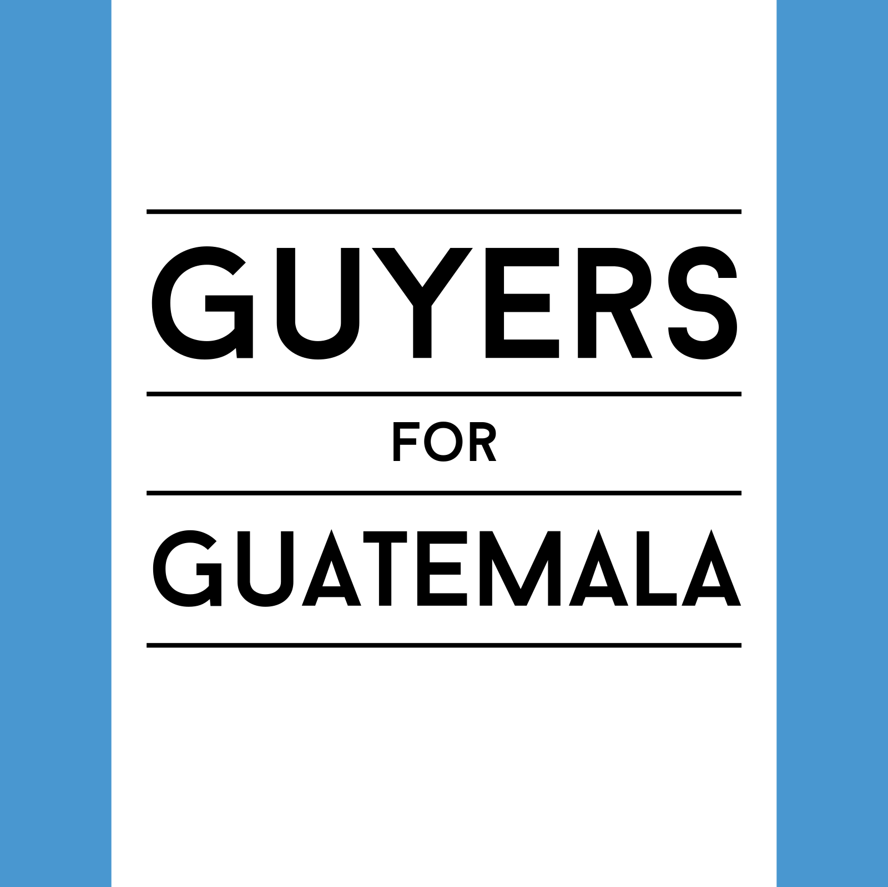
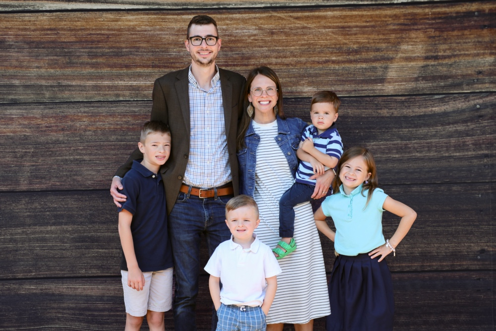

Nicko and Denise Guyer
We're the Guyers, and we are church planting missionaries to Guatemala serving through the World Initiative Network. You can use the links below to follow our journey or to help support God's work in Guatemala.
Current Monthly Support Progress
Apr
May
Jun
Jul
Aug
Sept
Oct
Nov
Dec
We were approved as WIN Missionaries on April 4, 2024 and began raising support to go to the mission field. Our goal is to be fully supported by the end of 2024 and ready to move to Guatemala early 2025. Our biggest need right now is for commitments for consistent monthly giving. We would be humbly thankful if you would like to support God's work in Guatemala by partnering with us.
Give Online
Follow us on Facebook
Follow us on YouTube
Subscribe to our Newsletter
Download Contact Card